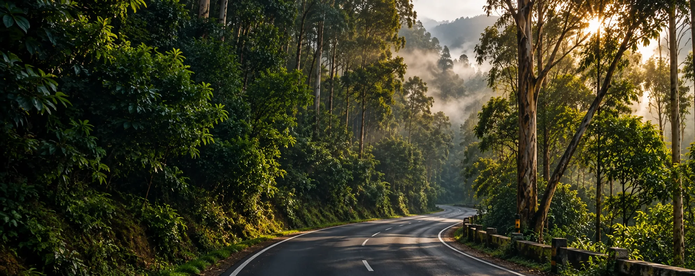
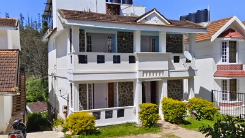
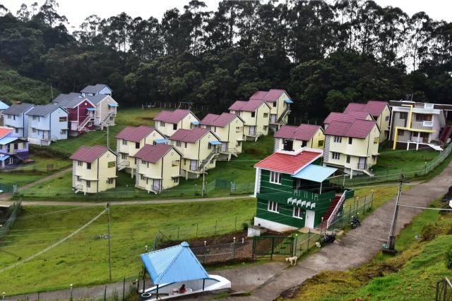
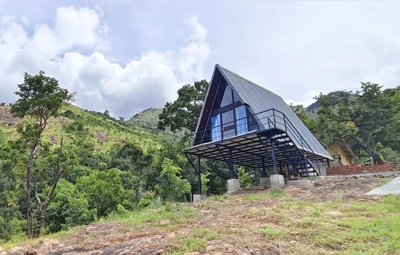
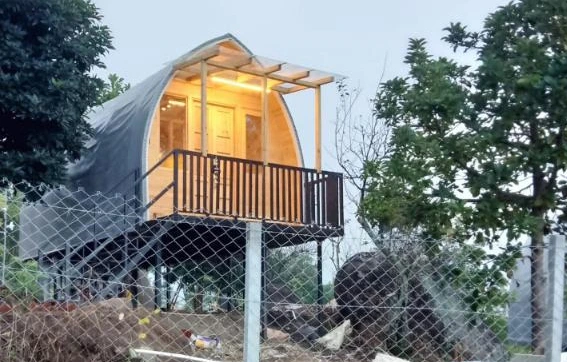
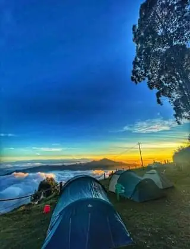

Package 01 · Half-Day, ~4 hrs / 40 km
Half-Day Local Rental
The shortest package, enough for a lake loop and one or two nearby viewpoints. Good if you're short on time or have a same-day travel plan.

Kodaikanal
Self-drive or with a driver — rent a car by the half-day, full-day, or for your outstation trip.
Self-Drive & Driver Options Hatchback to SUV Local & Outstation

The Service
Car rental in Kodaikanal covers two different needs: a local rental for getting around town and its nearby sightseeing points, and an outstation rental for the longer one-way or round-trip drive to and from the hills. You can take a car with a driver, or ask for a self-drive hatchback if you'd rather handle the ghat roads yourself.
Most guests book a half-day or full-day local package to cover Kodaikanal Lake, Coaker's Walk, Pillar Rocks and Bryant Park without negotiating a fresh rate at every stop, then arrange a separate outstation car for the trip in or out of the hills. Cottages Kodaikanal arranges both through the same vetted local fleet.
Why Rent With Us?
Destinations
A rental car covers both everyday local sightseeing around town and the road in or out of the hills — here's what's covered.
Beyond local sightseeing, our rental cars run the same ghat roads used for outstation transfers in and out of Kodaikanal. These are the five routes we serve most often — tap any of them for the fare and drive time.
One-way and round-trip rental is available on every route above — ask us for a combined quote if you also need local sightseeing on the same trip.
The Options
Three package shapes cover most of what guests ask for — pick by how long you need the car and whether you're staying local or heading out of the hills.
The shortest package, enough for a lake loop and one or two nearby viewpoints. Good if you're short on time or have a same-day travel plan.
Our most-booked package — a full day of local sightseeing without worrying about the km slab running out midway.
A car for the drive in or out of the hills, priced by distance rather than a fixed local slab. Multi-day outstation hire is available too.



Rental Rates
Hatchback
From ₹1,600
Most Booked
Sedan
From ₹2,000
SUV
From ₹2,800
Figures above are for a local 8-hour / 80 km package and are a starting point — exact rates depend on your dates and vehicle availability. Outstation, multi-day and tempo traveller rates are quoted separately. Get an exact quote →

Seasons
Mar – May. Peak tourist season — high demand for self-drive and outstation cars. Book three to four days ahead for your preferred vehicle.
Jun – Sep. Quieter roads and easier same-day availability, though the ghat sections can slow travel time after heavy rain.
Oct – Nov. A calm shoulder season — good availability and steady rates, with comfortable weather for local sightseeing.
Dec – Feb. The second peak, especially Christmas–New Year and January weekends — the highest demand and rates of the year, so book early.

Peace of Mind
Good to Know
Ghat roads have plenty of turns — if anyone gets carsick easily, ask for a front-seat option or a slower pace. Self-drive is only recommended if you're already comfortable on hill roads; otherwise a driver-included rental is the easier choice for families.
The Package
Included
Not Included
Fuel beyond package km · Parking & entry fees · Driver night-halt charge on multi-day outstation trips
These are confirmed clearly in your quote, not added as a surprise later.
Build Your Rental
Pick a duration, vehicle and trip type below and send it straight to us on WhatsApp.
01 Duration
02 Vehicle Type
03 Trip Type
Your rental: Half-Day · Hatchback · With Driver
Plan My Rental
Three Steps
Your vehicle & package
Your date & booking
Off in your rental car
Why Cottages Kodaikanal
12 years arranging stays and rides in Kodaikanal. We know which cars and drivers actually hold up on these roads, and every rate on this page is one our own team has quoted and driven.
Free, no-pressure quotes against your real dates and group size, vetted vehicles and drivers, and a same-day response on WhatsApp — no call center, just our local team.

Questions
A valid driving license, a government photo ID and a refundable security deposit. We note the exact deposit amount in your quote before you book.
Yes — most of our rentals already come with a local driver by default. Self-drive is available on request for hatchbacks and sedans.
The car, fuel for the package kilometers, a local driver (unless self-drive), tolls and permit fees for outstation routes, and pickup and drop at your stay.
Yes — tell us your onward city and dates and we'll quote a combined local-plus-outstation rate rather than booking two separate cars.
Cars are easiest to book and best priced in the monsoon and autumn months. December to February and the summer holidays are peak season, so book a few days ahead.
Hatchbacks and sedans for 3 to 4 passengers, SUVs for 6 to 7, and tempo travellers for larger groups of 9 to 17 on request.
Share your dates, pickup point and preferred vehicle on WhatsApp or by phone, and we confirm your car and rate the same day.

